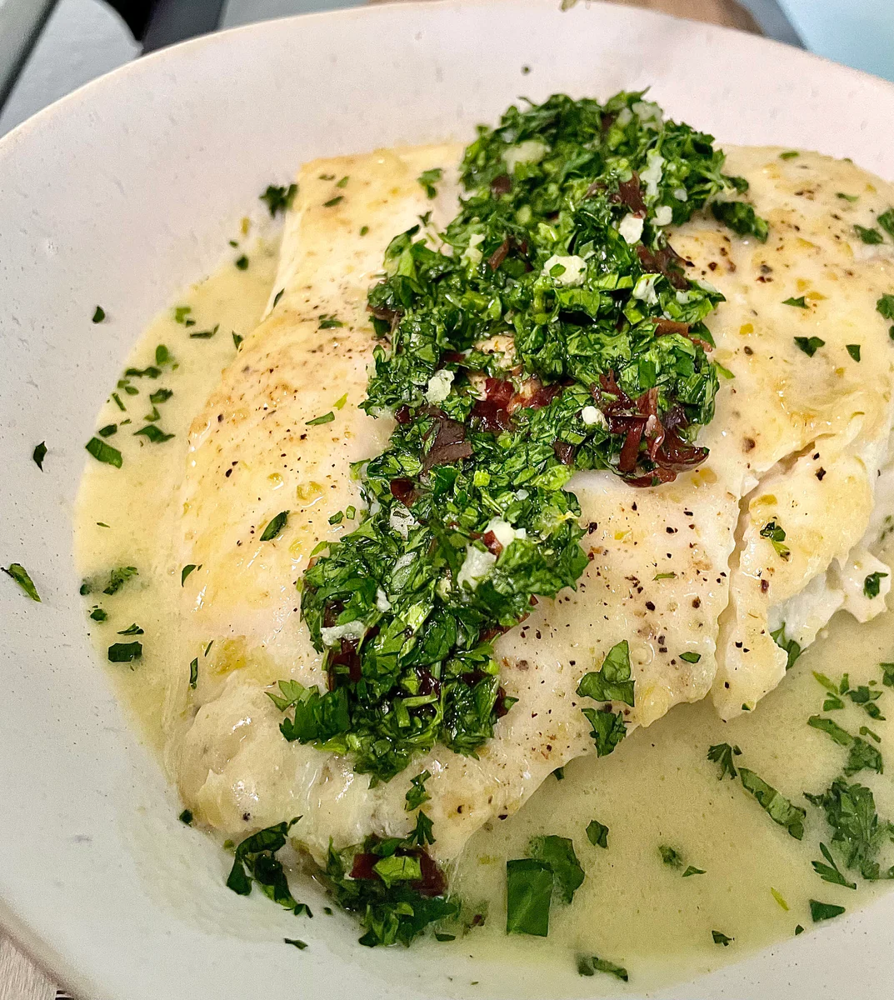

- Dulse Gremolata
- 1 medium lemon
- 3 cloves garlic, minced
- 1/2 cup minced herbss (parsley, cilantro, scallion)
- 1/4 cup fresh dulse seaweed
- 1/4 cup rice vinegar
- 1/4 cup water
- 1 teaspoon kosher salt
- 2 tablespoons olive oil
- 1 tablespoon coconut oil
- 4 fillets of halibut, about 1 pound
- 1 can New Seasons Market Full-Fat Coconut Milk
- 2-3 tablespoons Serrano Ginger Lemongrass Marshall's Haute Sauce
- Juice of 1/2 lime
- 1 teaspoon Kosher sea salt
- 1. Zest the lemon. Pour the juice over the minced garlic. Boil rice vinegar, water and salt, pour over dulse, let stand 5 minutes. Finely chop dulse, mix lemon zest, herbs, garlic mixture, olive oil, and dulse.
- 2. Season the Halibut fillets with salt on both sides. In a large skillet, heat coconut oil over medium heat; place the Halibut skin side up into the hot coconut oil. Let cook 3-4 minutes until golden, flip.
- 3. Add the Serrano Ginger Lemongrass sauce and coconut milk and bring to a boil. Reduce heat to medium low; cook until fish flakes easily when tested, about four minutes. Remove skin. Transfer fish to plate and keep warm.
- 4. Simmer sauce until thick enough to coat the back of a spoon, about 5-7 minutes. Stir in lime juice, and salt. Ladle over fish. Top fish with Gremolata and serve over steamed rice.
Aromatic Coconut Milk Poached Halibut With Dulse Gremolata